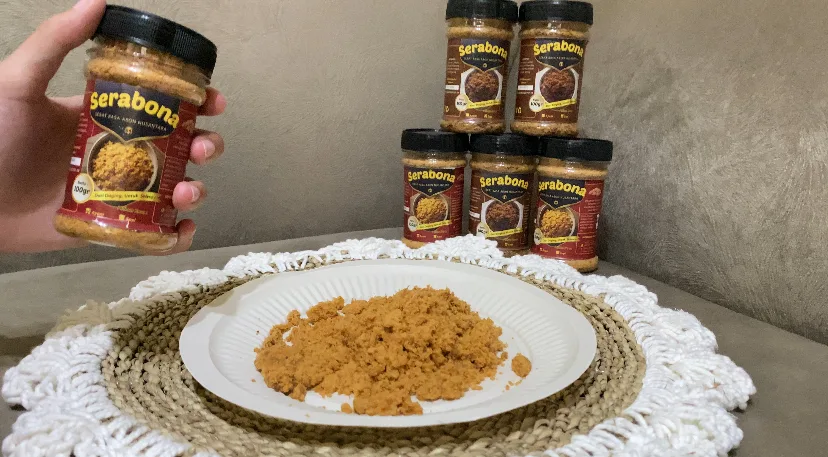
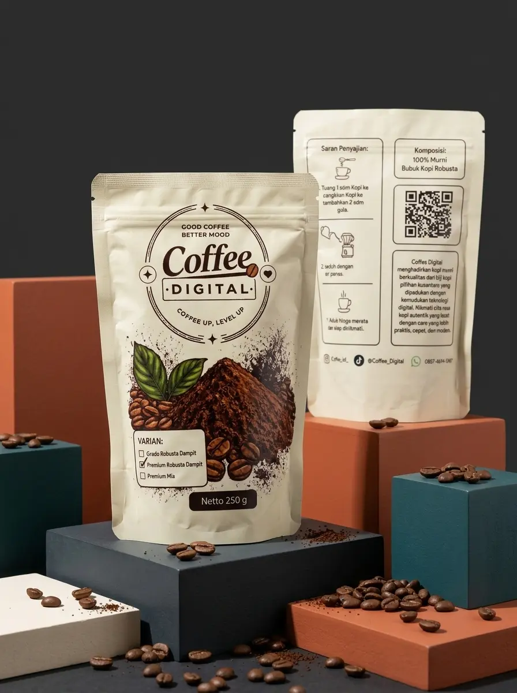
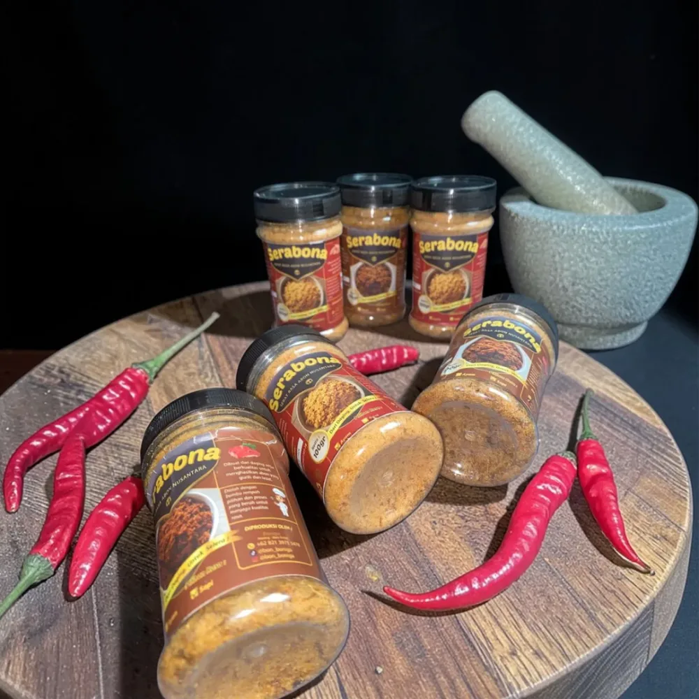

Menghidupkan Cita Rasa Warisan Lokal Melalui Gotong Royong Wirausaha
Platform katalog ini adalah inisiatif bersama yang merangkul tiga potensi kuliner dan komoditas unggulan: Kriuk Saujana (Sentra Olahan Tempe Malang), Coffee Digital (Perkebunan Lereng Semeru Dampit), dan Serabona (Olahan Abon Daging Nusantara) dalam satu ekosistem etalase digital terpercaya.

3 Pilar Integritas Produk
Tiga prinsip mutlak yang kami jaga dalam setiap kemasan yang kami produksi.
Bahan Baku Murni & Segar
Dari kedelai lokal Malang bebas GMO, daging sapi segar berserat halus, daging dada ayam pilihan, hingga biji kopi petik merah lereng Semeru — setiap bahan melewati seleksi fisik ketat.
- • Kedelai lokal pilihan berkualitas
- • Daging segar tanpa campuran filler
- • Biji kopi petik merah sortasi ketat
Higienitas & Proteksi Kemasan
Kerenyahan dan aroma diproteksi melalui kemasan modern berstandar pangan: standing pouch dengan zipper lock rapat, botol jar PET segel ganda, dan degassing valve kopi.
- • Suhu penggorengan stabil 125°C
- • Penirisan minyak optimal (dry-crisp)
- • Segel kedap udara anti-melempem
Layanan Direct Contact Person
Setiap pemesanan dikomunikasikan langsung dengan penanggung jawab unit produksi: Talita, Artha, dan Jessika, memastikan transparansi stok, tanggal sangrai, dan tanggal produksi.
- • Respons cepat via WhatsApp resmi
- • Garansi kemasan aman tiba di tujuan
- • Pengiriman ke seluruh wilayah Nusantara
Kisah di Balik 3 Brand Kami
Mengenal lebih dekat dedikasi pengrajin lokal dan produk kebanggaan yang mereka hadirkan.

Kriuk Saujana — “Renyahnya Gak Dibuat-Buat!”
Kriuk Saujana mengolah potensi kedelai lokal Malang dengan teknik irisan tipis presisi yang menghasilkan kerenyahan maksimal (Kreezz!) saat digigit. Dibumbui dengan bawang putih dan ketumbar sangrai tanpa penambahan pengawet kimiawi, menghasilkan camilan harian yang gurih alami dan tidak meninggalkan rasa serak di tenggorokan.

Coffee Digital — “Kopi Murni Nusantara dalam Genggaman Digital”
Tumbuh di tanah vulkanik subur lereng Semeru pada ketinggian 600-800 mdpl, Coffee Digital membawa kemurnian biji kopi Robusta Dampit yang tersohor. Dengan metode petik merah 100% dan sangrai presisi medium-dark, kopi ini memancarkan aroma dark chocolate karamel yang tebal, kepahitan yang bulat, serta crema pekat tanpa bahan perisa sintetik.

Serabona — “Cita Rasa Nusantara, Serat Khas Abon!”
Serabona memadukan kebaikan protein daging murni (dada ayam segar dan daging sapi pilihan) dengan resep rempah warisan yang meresap hingga serat terdalam. Keistimewaan Serabona terletak pada taburan kacang sangrai yang gurih renyah, menciptakan harmoni tekstur lembut dan garing. Sangat praktis untuk santapan sahur, berbuka, bekal kerja, maupun lauk darurat anak kos.
4 Tahap Menjaga Kesegaran Produk
Bagaimana setiap kemasan disiapkan dari dapur produsen hingga tiba di tangan Anda.
Sortasi Bahan Baku
Penyortiran manual biji kopi petik merah, kedelai Malang murni, dan potongan daging segar tanpa bahan pengisi.
Pengolahan Tradisi
Memasak dengan rempah murni dan kontrol suhu presisi 125°C untuk mempertahankan nutrisi alami dan kerenyahan.
Segel Kedap Udara
Pengemasan higienis dengan sistem zipper pouch, segel jar ganda, dan one-way valve untuk menjaga aroma pekat.
Pengiriman Aman
Pelindung kardus tebal dan bubble wrap dobel agar produk tiba dalam kondisi utuh dan renyah di seluruh Indonesia.
Konsultasi & Pemesanan Cepat
Hubungi PIC resmi masing-masing brand melalui WhatsApp untuk informasi stok dan pemesanan.